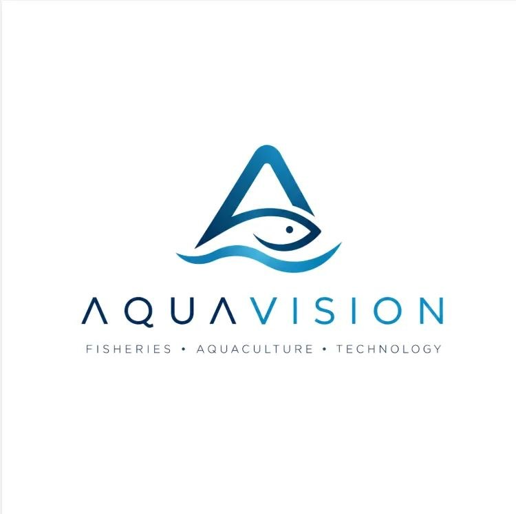

AquaVision
Single source of truth for the AquaVision platform: a phased product story (Phase 1 free farming app, Phase 2 premium analytics/marketplace, Phase 3 IoT + OmniDrone hardware), pitch material, thesis material, engineering specification, research corpus, and chart-ready datasets. Designed to be consumed by a static HTML dashboard via fetch() on these JSON files.
Read this first — the provenance system
Every quantitative field in this repository carries a `provenance` tag. NEVER cite a figure in a thesis or investor deck without checking that tag first. The tags mean:
Sourced from a named third-party publication (FAO, World Bank, peer-reviewed journal, government agency). A resolvable citation_id exists in references-bibliography.json. Safe to cite with attribution.
Computed by AquaVision from one or more `verified_external` inputs. The formula is stated in the record. Safe to cite if you also state the assumptions.
AquaVision's forward-looking model (financials, adoption curves, performance targets). This is an ARGUMENT, not a fact. Present as 'we project', never as 'studies show'.
An engineering goal the hardware has not yet been measured against. Present as a specification target, not an achieved result.
Fabricated sample data whose ONLY purpose is to make the dashboard render and to show data SHAPE. It describes no real pond and no real fish. Must never appear in a thesis results chapter or a pitch as evidence.
A stated planning assumption awaiting validation. Listed so reviewers can attack it.
Awaiting real data
These files are deliberate, schema-defined placeholders. Honest zeros beat invented traction.
- Traction
data/10_business/traction.json - Sample Telemetry — ILLUSTRATIVE SYNTHETIC DATA
data/12_datasets/sample-telemetry.json - Sample Digital Twin State — ILLUSTRATIVE SYNTHETIC DATA
data/12_datasets/sample-pond-twin-state.json - Water Quality Standards & Thresholds
data/09_compliance/water-quality-standards.json - Unit Economics
data/10_business/unit-economics.json - Financial Projections
data/10_business/financial-projections.json
Highest-priority gaps
- BFAR Philippine Fisheries Profile (operator counts) — blocks market sizing
- Primary-source verification of every bibliography entry — zero currently verified
- Species-specific water quality thresholds — highest-consequence placeholders
- Direct CAAP confirmation of the BVLOS/night-ops pathway and the 7 kg bracket
- Real BOM quotes (starting with the sonde) — blocks unit economics
Browse the repository
Meta & Schemas
Schema registry, glossary, data dictionary, changelog. Read this to understand every other file.
Company & Identity
Who AquaVision is: profile, brand system, mission, team structure, milestone roadmap.
Problem Space
The aquaculture and fisheries problems the OmniDrone addresses, taxonomised, evidenced, and costed.
Market & Competition
Industry statistics, TAM/SAM/SOM, competitor teardown, customer personas, SWOT and Porter analysis.
Solution & ConOps
What AquaVision does across its three phases (free app, premium tier, OmniDrone/IoT hardware), the value proposition, the use cases, and the concept of operations.
Hardware Engineering (Phase 3)
Airframe, propulsion, reeled probe winch, sensor payload, carriage/ejection system, power budget, dock, BOM — the Phase 3 smart-aquaculture upgrade layer.
Software, AI & Digital Twin
System architecture, data pipeline, ML model cards, digital twin spec, API, telemetry schema, dashboard spec.
Research Corpus
Literature review, thematic related-studies collections, full bibliography with links, research gaps, theoretical framework, methodology.
Operations & Safety
Deployment playbook, maintenance, risk register (FMEA), training and certification.
Regulatory & Compliance
Aviation law, fisheries law, water quality standards, biosecurity, data ethics and privacy.
Business Model
Business model canvas, pricing, unit economics, financial projections, funding ask, go-to-market.
Impact
SDG alignment, environmental impact, social and economic impact.
Datasets & Charts
Chart-ready payloads, KPI definitions, sample telemetry, sample digital twin state.
Pitch & Thesis Kit
Deck outline, elevator pitches at three lengths, objection handling, thesis chapter outline.